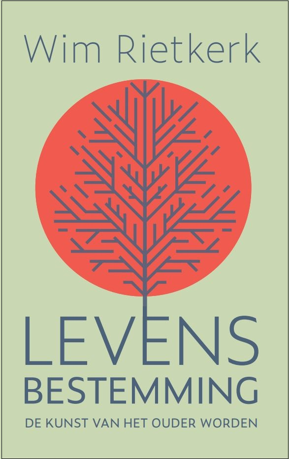
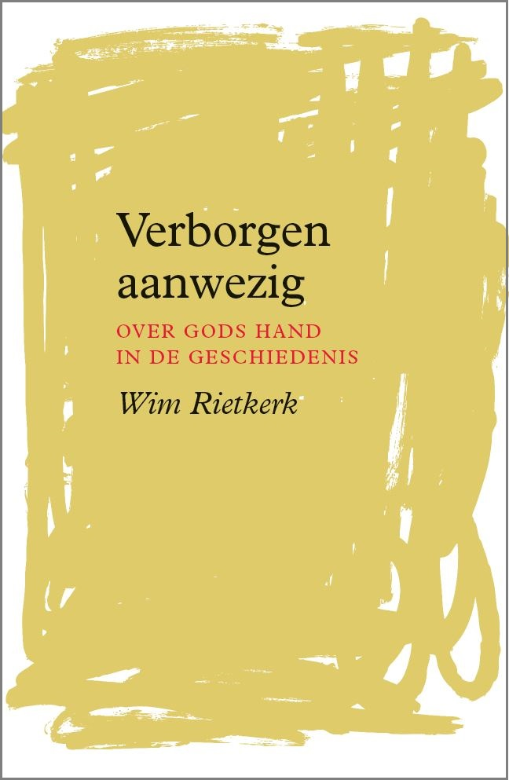
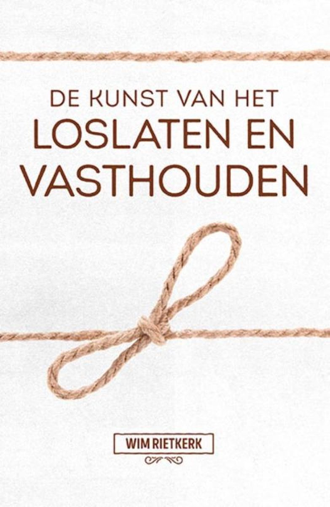
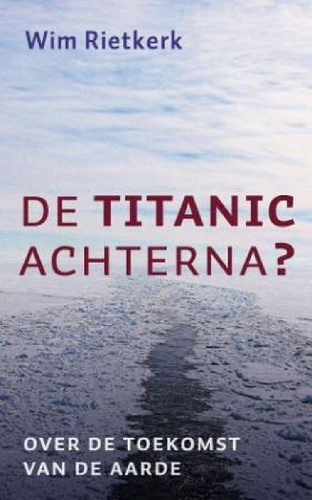
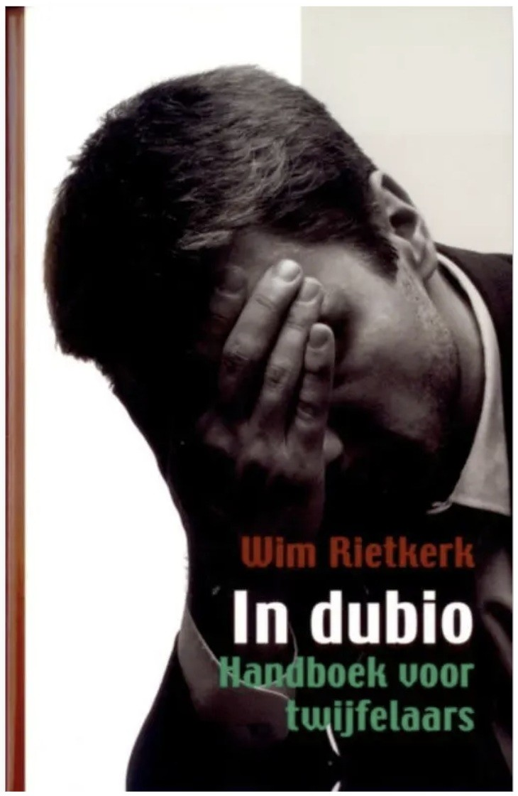
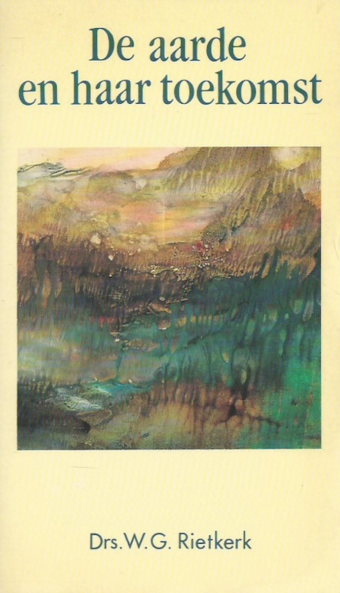
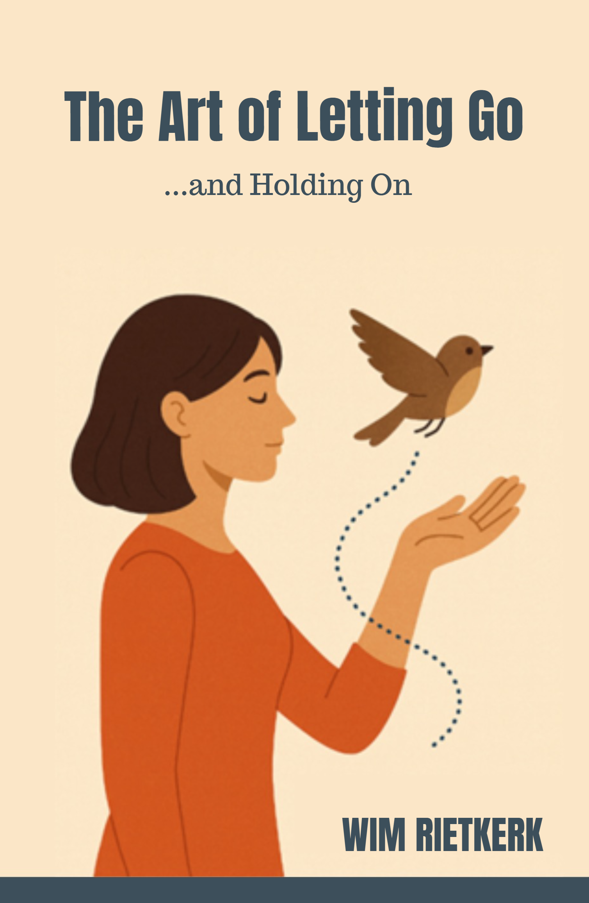
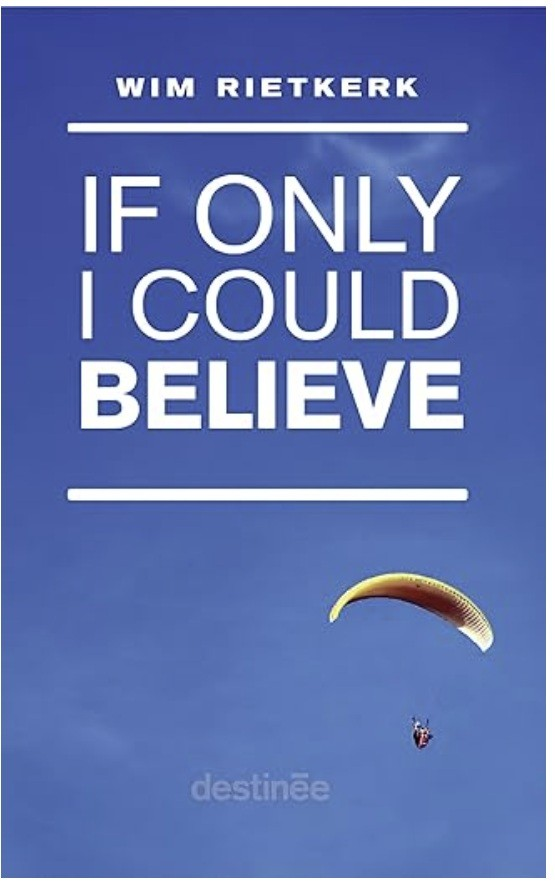

Levensbestemming
De kunst van het ouder worden
Hoe geef je je leven richting wanneer de actieve jaren voorbij zijn? Rietkerk schrijft vanuit eigen ervaring over bestemming, hoop en ouder worden.

Verborgen aanwezig
Over Gods hand in de geschiedenis
Wat doet God op het wereldtoneel? Van persoonlijke levenservaringen tot wereldwijde gebeurtenissen - een zoektocht naar de rode draad van Gods aanwezigheid.

De kunst van het loslaten en vasthouden
Wat laat je los en wat houd je vast wanneer het leven verandert? In gesprek met oosterse mystici en postmoderne denkers over wat de Bijbel leert over loslaten.

De Titanic achterna?
Over de toekomst van de aarde
Het leven is geen wachtkamer tot de hemel opengaat. De Schrift spreekt over een vernieuwde aarde na Gods loutering. Een pleidooi voor hoop en betrokkenheid bij de schepping.

In dubio
Handboek voor twijfelaars
Twijfel is als een envelop met inhoud: maak hem open en haal de boodschap eruit. Over levensvragen, Gods bestaan en de kunst van het luisteren naar twijfel.

De aarde en haar toekomst
Een protest tegen alle doemdenken. Met een exegetische analyse van 2 Petrus 3 over eschatologie en de relatie tussen mens en schepping.
Buitenlandse uitgaven
Boeken van Wim Rietkerk die in andere talen en in het buitenland zijn uitgegeven.

The Art of Letting Go
...and Holding On
Engelse vertaling van 'De kunst van het loslaten en vasthouden'.

If Only I Could Believe
Over de worsteling om tot geloof te komen. Een toegankelijke inleiding in de christelijke apologetiek.
In dubio – Handbuch für Zweifler
Duitse vertaling van 'In dubio'.
Was ist Wahrheit?
Gott: Illusion oder Wirklichkeit
What in the World is Real
Challenging the Superficial in Today's World
Dio: illusione o realtà?
The Future Great Planet Earth
Den kristne og samfundet
Hvad i al verden er virkeligt?
Anfragen an die Realität Gottes
Gott – Illusion oder Projektion?